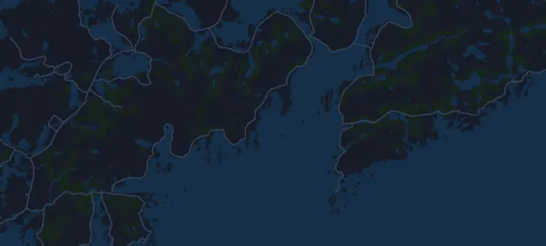

Lofoten Ultra-Trail® // 50 miles 87.3 km
- Distance
- 87.3 km
- Elevation gain
- ↑ 3,645 m
- Highest point
- 662 m a.s.l.
- Surface
- Trail
- Profile
- Very hilly
- Start
- 09:00
- Aid stations
- 5
Elevation profile
Prepare with Mila
Mila is a running coach app. Add a race to your plan and the coach plans your weeks up to race day around your form, and gives you a finish-time forecast and a plan for pacing, drinks and fuel on the course.

The right run, on the right day.
The course

About the course
Lofoten Ultra-Trail® // 50 miles is a trail race in Leknes, Norway, over 87.3 km. The course climbs 3,645 m and descends 3,657 m in total, 42 m per km, which makes it very hilly. The highest point is 662 m above sea level and the lowest -3 m.
The biggest climb starts at km 72.9: 401 m of ascent over 1.4 km at 28.8 % on average, up to 527 m. In total the course has 26 climbs of at least 25 m; the last one starts at km 85.9.
The organizer lists 5 aid stations, the first at km 17.0 and the last at km 82.0.
In the Mila app, the coach describes the course in detail in your language and plans your pacing and fueling for it.
Climbs
| Starts at | Length | Gain | Gradient | Top (m above sea level) |
|---|---|---|---|---|
| km 0.4 | 4.3 km | 115 m | 2.7 % | 127 |
| km 18.1 | 2.8 km | 380 m | 13.5 % | 398 |
| km 20.9 | 280 m | 46 m | 16.5 % | 441 |
| km 23.3 | 640 m | 93 m | 14.6 % | 196 |
| km 28.3 | 1.2 km | 26 m | 2.2 % | 31 |
| km 38.9 | 3.1 km | 339 m | 10.8 % | 346 |
| km 42.1 | 570 m | 57 m | 10.0 % | 399 |
| km 43.7 | 210 m | 31 m | 14.9 % | 242 |
| km 44.2 | 480 m | 50 m | 10.3 % | 253 |
| km 45.4 | 780 m | 28 m | 3.5 % | 246 |
| km 46.3 | 740 m | 59 m | 7.9 % | 285 |
| km 48.6 | 1.8 km | 388 m | 22.1 % | 540 |
| km 58.8 | 1.5 km | 25 m | 1.6 % | 34 |
| km 66.0 | 450 m | 28 m | 6.2 % | 36 |
| km 68.9 | 1.1 km | 29 m | 2.7 % | 36 |
| km 72.3 | 530 m | 109 m | 20.7 % | 130 |
| km 72.9 | 1.4 km | 401 m | 28.8 % | 527 |
| km 74.5 | 940 m | 127 m | 13.5 % | 605 |
| km 75.5 | 320 m | 58 m | 18.0 % | 662 |
| km 77.4 | 590 m | 37 m | 6.3 % | 353 |
| km 78.0 | 380 m | 50 m | 13.3 % | 399 |
| km 80.0 | 950 m | 26 m | 2.7 % | 45 |
| km 81.0 | 1.4 km | 183 m | 13.0 % | 226 |
| km 82.4 | 140 m | 105 m | 77.9 % | 314 |
| km 82.5 | 70 m | 49 m | 68.5 % | 348 |
| km 85.9 | 400 m | 26 m | 6.6 % | 26 |
Before the start
Aid stations
| At | What's there |
|---|---|
| km 17.0 | water, sports drink, food, salt |
| km 40.0 | water, sports drink, food, salt |
| km 55.0 | water, sports drink, food, salt |
| km 67.0 | water, sports drink, food, salt |
| km 82.0 | water, sports drink, food, salt |
Start times
- 09:00
Source: thearctictriple.no, retrieved 15 October 2026
Frequently asked questions
When is Lofoten Ultra-Trail® // 50 miles 87.3 km?
Lofoten Ultra-Trail® // 50 miles 87.3 km takes place on Saturday, 5 June 2027. Check the date and start time with the organizer.
What time does Lofoten Ultra-Trail® // 50 miles 87.3 km start?
According to the organizer: 09:00.
How long is Lofoten Ultra-Trail® // 50 miles 87.3 km and how much climbing is there?
The race is 87.3 km with 3,645 m of climbing and 3,657 m of descent. The highest point is 662 m above sea level.
What is the course of Lofoten Ultra-Trail® // 50 miles 87.3 km like?
The course is very hilly, with 42 m of climbing per km on average. It has 26 climbs of at least 25 m; the biggest starts at km 72.9: 401 m over 1.4 km. It runs from the start to a finish in another place. The surface is trail.
Are there aid stations at Lofoten Ultra-Trail® // 50 miles 87.3 km?
Yes. The organizer lists 5 aid stations: km 17.0 (water, sports drink, food, salt); km 40.0 (water, sports drink, food, salt); km 55.0 (water, sports drink, food, salt); km 67.0 (water, sports drink, food, salt); km 82.0 (water, sports drink, food, salt).
How should I pace Lofoten Ultra-Trail® // 50 miles 87.3 km?
Aim for an even effort rather than an even pace: let the pace drop on the climbs, win it back where it levels out, and hold back in the first kilometres. The biggest climbs start at km 18.1, km 38.9, km 48.6 and km 72.9. In Mila you get a pace plan for this course, based on your own form.
More races like this
More races nearby
- Det Norske Fjellmaraton – Maraton (42,2 km)5 June 2027 · Heimsand (Sjodalen), Beitostølen, Norway
- Birkebeinerløpet 21 km12 June 2027 · Lillehammer (Birkebeineren skistadion), Norway
- EcoTrail Oslo – Trail 80 km29 May 2027 · Oslo (Nedre Foss park), Norway
- Midnight Sun Marathon 42.2 km19 June 2027 · Tromsø, Norway
- Sentrumsløpet 10 km24 April 2027 · Oslo, Norway
- Fjordkraft Bergen City Marathon – Maraton 42.2 km24 April 2027 · Bergen, Norway
Prepare with Mila
The right run, on the right day.
Details come from the course file and the organizer's information. Check the date, start times and rules with the organizer.
Mila is not affiliated with, sponsored by or endorsed by the organizer or the race's sponsors. Names and trademarks belong to their owners. Organizer or rights holder? Ask for a change or a removal